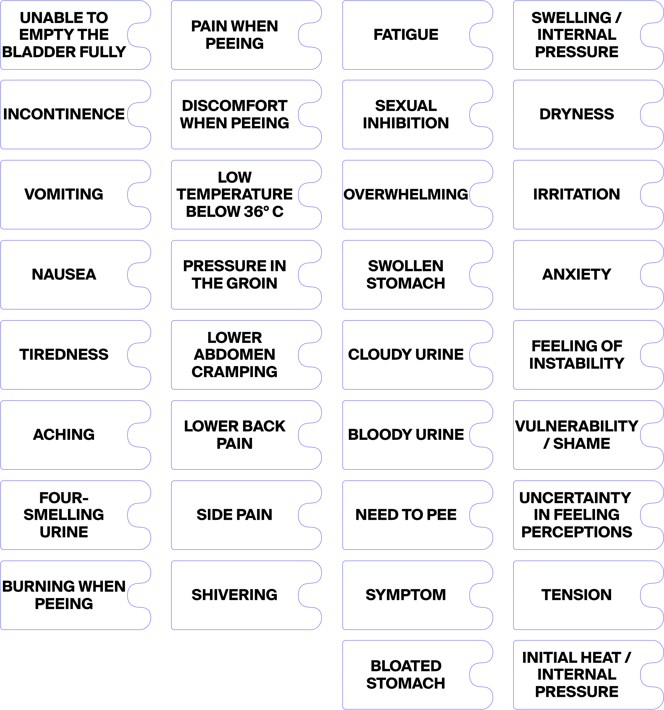
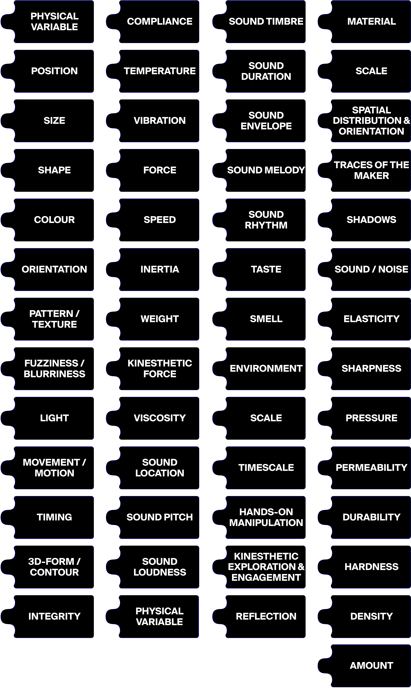

The Physical Variable Apparatus brings together the methodological contribution of the thesis as a tangible, adaptable, and replicable system for participatory enquiry. It is designed as a practical support that enables researchers, clinicians, and designers to apply the approach developed in this study, supporting the elicitation, interpretation, and sharing of embodied data in structured yet flexible ways.
Drawing on Barad’s notion of apparatus as a material and discursive arrangement through which phenomena come into being (Barad, 2007), the term is used here to emphasise knowledge as situated and relational. What becomes knowable depends on the specific conditions of engagement, shaped by both material configurations and interpretative contexts. This perspective guides the use of physical variables in the study. Rather than acting as neutral representations, they function as active elements in meaning making. Interaction with materials becomes a form of recording through which knowledge is produced. By pressing, stretching, or shaping textures, weights, and forms, participants relate sensation, perception, and interpretation. Knowledge emerges through these interactions, formed within the relations between people, materials, and context.
The term apparatus is therefore adopted to enable participants externalising embodied
sensations, compare interpretations, and collectively articulate experiences that are rarely captured
by conventional forms of data collection in healthcare.
The following sections present the four
interconnected components through which the apparatus operates:
The sets of symptom and physical-variable labels
Labels of symptoms
What is considered as symptom
What is considered a symptom within this set of labels aligns with, yet also expands upon, the definition discussed in the theoretical ground of this thesis (Chapter 2), where symptoms are described as subjective manifestations of underlying physiological processes that rely on an individual’s ability to perceive and communicate internal sensations (Malterud et al., 2015). While the definition adopted in this thesis is intentionally broad and open to include psychological as well as physical conditions, the lists of UTI symptoms provided in the medical literature mainly refer to physical manifestations. This focus possibly reflects the clinical need to identify measurable indicators that support diagnosis and treatment. However, evidence from the workshops shows that participants rarely described symptoms as purely physiological events. Instead, symptoms were portrayed as felt conditions indicating change, discomfort, or imbalance, often intertwined with emotional states and contextual circumstances. Participants spoke of pressure, burning, and tension together with feelings of anxiety, inhibition, or embarrassment. These accounts reveal that symptoms are experienced as multidimensional phenomena, shaped by the interplay of physical, emotional, and social dimensions, and cannot be fully represented within the boundaries of medical terminology, which tends to isolate symptoms from the circumstances in which they are lived.
Based on this, I broaden the definition of symptom to recognise how causes, effects, and experiences overlap in the progression and understanding of disease. Clinical reasoning often relies on a linear model in which disease produces symptoms and symptoms lead to consequences or complications. When illness is examined through lived experience, these categories become less distinct. What medicine may classify as a consequence or external factor can instead contribute to shaping or intensifying the condition itself. Acknowledging these interdependencies allows a more comprehensive view of illness, where physical, emotional, and contextual factors work together in producing the experience of being unwell. This perspective shows that what sustains or worsens a symptom may not reside only in the body but may also relate to emotional states, social interactions, or environmental circumstances.
By moving beyond temporal and hierarchical models of cause and effect, this thesis adopts a holistic and relational understanding of symptoms. Within this context, symptoms are considered as changes in the body that become meaningful through perception, expression, and shared interpretation, functioning as traces that connect awareness with processes of meaning-making. This expanded understanding opens a space for deeper dialogue about disease and invites reflection on how its mechanisms are experienced, interpreted, and potentially transformed. Based on this interpretation, the following section presents the list of symptoms considered meaningful for the activity, combining physical conditions from the literature and alternative descriptions and perceptions emerged from the workshop sessions. The set should not be treated as a definitive or exhaustive list, but as a resource that can be taken up, questioned, and adapted in future activities. Its role is to provide an orientation that supports discussion, making space for further articulation of embodied conditions across different contexts.
The final list of symptoms considered for the labels
The initial set of symptoms, which was also adopted during the activities as the formal reference for the labels, was extracted from the medical literature (Kaur and Kaur, 2020) and includes the following:
- ~ Swollen stomach;
- ~ Cloudy urine;
- ~ Cloody urine;
- ~ Need to pee;
- ~ Pain when peeing;
- ~ Discomfort when peeing;
- ~ Low temperature below 36;
- ~ Pressure in the groin;
- ~ Lower abdomen cramping;
- ~ Lower back pain;
- ~ Side pain;
- ~ Shivering;
- ~ Unable to empty the bladder fully;
- ~ Incontinence;
- ~ Vomiting;
- ~ Nausea;
- ~ Tiredness;
- ~ Aching;
- ~ Foul-smelling urine.
- ~ Bloated stomach: Internal sensation of fullness and pressure in the lower abdomen, often associated with swelling or incontinence. It expresses a feeling of expansion and imbalance, where the body is perceived as heavy or distended. The symptom conveys tension and retention, marking the early stage of discomfort and loss of bodily ease.
- ~ Burning when urinating: A sharp or stinging pain during urination, often perceived as heat or irritation in the urinary tract. It indicates inflammation of the bladder or urethra and represents a distinct sensory marker of infection, characterised by discomfort and heightened sensitivity.
- ~ Tension: Muscular or psychological contraction arising from discomfort, stress, or anticipation of pain. It manifests as bodily stiffness or rigidity and reflects the connection between emotional strain and physical response. The symptom expresses how anxiety or worry can translate into a felt tightness within the body, linking emotional experience to somatic reaction.
- ~ Internal heat / ‘Burning aura’: Diffuse sensation of warmth or heat inside the pelvic area, often radiating beyond the point of pain. It conveys inflammation and internal irritation perceived through thermal imagery such as fire or glow. The symptom reflects an intensified bodily awareness, where heat becomes a sign of disturbance and imbalance within the body.
- ~ Swelling / Internal pressure: Sensation of heaviness, fullness, or expansion in the lower abdomen or pelvic area. It often precedes pain and signals the onset or progression of infection. The symptom expresses an awareness of internal build-up or obstruction, where the body is felt dense and strained, indicating a loss of fluid balance and comfort.
- ~ Dryness: Lack of moisture or smoothness within the urinary tract, perceived as friction or roughness during urination. It conveys a sense of abrasion and discomfort, often preceding or accompanying pain. The symptom reflects a surface-level sensitivity, where the body is experienced as raw or unprotected.
- ~ Irritation: Burning or stinging sensation caused by inflammation or repeated friction in the urinary tract. It conveys a feeling of persistent sensitivity and discomfort, often fluctuating in intensity. The symptom reflects the reactive state of the body when exposed to infection, marking heightened awareness of pain and vulnerability.
- ~ Anxiety: State of unease or apprehension related to the anticipation of pain or recurrence of infection. It manifests as mental tension and restlessness, often influencing bodily sensations and perception of symptoms. The symptom reflects a psychological response intertwined with physical experience, showing how fear and uncertainty become part of the illness itself.
- ~ Feeling of instability: Sense of imbalance or loss of steadiness that accompanies repeated or unpredictable illness episodes. It conveys both physical fragility and emotional insecurity, as the body is perceived as unreliable or easily disturbed. The symptom reflects the progressive weakening of confidence in bodily control, linking recurrence with feelings of uncertainty and loss of grounding.
- ~ Vulnerability / Shame: Feeling of exposure, fragility, and discomfort connected to the private nature of urinary symptoms. It arises from the difficulty of discussing intimate or stigmatised conditions, often accompanied by embarrassment or self-consciousness. The symptom expresses a social and emotional dimension of illness, where bodily sensitivity is intensified by cultural silence and fear of judgment.
- ~ Uncertainty in feeling perceptions: Difficulty in recognising or interpreting bodily sensations, such as distinguishing normal from abnormal discomfort. It reflects a state of doubt toward one’s own perception, often emerging when symptoms are ambiguous or fluctuate in intensity. The symptom reveals the fragility of bodily knowledge, showing how individuals question their sensations and rely on reflection or comparison to make sense of what they feel.
- ~ Fatigue: Persistent sense of physical and mental exhaustion that follows or accompanies infection. It extends beyond ordinary tiredness, affecting concentration, motivation, and daily activities. The symptom reflects the prolonged impact of illness on the body’s energy and emotional balance, marking a continuous drain that blurs recovery and recurrence.
- ~ Sexual inhibition: Reluctance or fear of engaging in sexual activity due to pain, discomfort, or anxiety related to infection. It reflects how the illness affects intimacy, trust, and body confidence, often leading to avoidance or emotional distance. The symptom reveals the relational consequences of vulnerability, where physical sensitivity and psychological fear combine to limit sexual expression and connection.
- ~ Overwhelming: State of unease or apprehension related to the anticipation of pain or recurrence of infection. It manifests as mental tension and restlessness, often influencing bodily sensations and perception of symptoms. The symptom reflects a psychological response intertwined with physical experience, showing how fear and uncertainty become part of the illness itself.
 Download the labels
Labels of physical variables
The development of the set of physical variables combines theoretical grounding with participatory experimentation. The framework proposed by Hornecker et al. (2023) provided the initial foundation for identifying relevant sensory dimensions, as it analyses how material properties operate as variables in the creation of meaning when materials are used for data representation. While the classification proposed by Hornecker and colleagues was comprehensive, only a limited selection of variables was introduced during the first workshop sessions to maintain clarity and focus. In subsequent sessions, participants spontaneously referred to additional sensory properties that had not been part of the initial selection. Their repeated mention of these variables confirmed their relevance and led to their inclusion in the final version of the set. During these same workshops, participants also identified new variables that were not present in Hornecker’s classification but were recognised as meaningful to describe their embodied experiences.
Although Hornecker et al. (2023) distinguish between explicit variables, implicit properties, and consequential aspects, I chose to treat these dimensions as free from categorical divisions. I made this decision because the purpose is not to reproduce an existing taxonomy but to enable open exploration and intuitive association. Since participants are supposedly not familiar with the terminology of physical variables or with material properties more broadly, introducing further classification is expected to create confusion and distance them from the experiential focus of the activity. For this reason, overlapping dimensions are not repeated, and the variables are presented without hierarchical order.
The final list of physical variables considered for the labels
The list of physical variables considered in this study draws from the vocabulary established by Hornecker et al. (2023), which includes:- ~ Position;
- ~ Size;
- ~ Shape;
- ~ Colour;
- ~ Orientation;
- ~ Pattern / Texture;
- ~ Fuzziness / Blurriness;
- ~ Light;
- ~ Movement / Motion;
- ~ Timing;
- ~ 3D-form contour;
- ~ Surface texture;
- ~ Compliance;
- ~ Temperature;
- ~ Vibration;
- ~ Force;
- ~ Speed;
- ~ Inertia;
- ~ Weight;
- ~ Kinesthetic friction;
- ~ Viscosity;
- ~ Sound location;
- ~ Pitch;
- ~ Loudness;
- ~ Timbre;
- ~ Duration;
- ~ Envelope;
- ~ Melody;
- ~ Rhythm;
- ~ Taste;
- ~ Smell;
- ~ Environment;
- ~ Scale;
- ~ Timescale;
- ~ Physical manipulation;
- ~ Kinesthetic exploration and engagement;
- ~ Reflection;
- ~ Material;
- ~ Spatial distribution and orientation;
- ~ Traces of the maker;
- ~ Shadows;
- ~ Sound / Noise;
- ~ Hardness: Perception of rigidity or resistance that evokes pain or lack of comfort. It reflects sensations that feel invasive or unyielding, representing difficulty in relief or transformation. The variable conveys the perception of the body as stiff or constrained, mirroring persistence and strain.
- ~ Density: Sense of compactness or saturation that expresses heaviness and fatigue. It conveys the perception of the body as weighty or full, suggesting reduced mobility and energy. The variable represents the bodily experience of accumulation and tiredness.
- ~ Amount: Perception of numerical repetition or frequency used to represent recurrence or intensity. It expresses how symptoms or sensations repeat, multiply, or accumulate. The variable symbolises patterns of persistence and rhythm in the experience of illness.
- ~ Integrity: Perception of wholeness or fragmentation in a material or form. It reflects conditions of breakdown, fragility, or deformation, symbolising vulnerability and loss of cohesion. The variable represents how the body or its sensations are perceived as intact, damaged, or altered through the course of illness.
- ~ Elasticity: Sensed capacity to expand or contract, expressed as tension, fullness, or distortion. It represents how inner pressure and change of volume can indicate the transition from stability to discomfort. The variable conveys the perception of expansion or compression as an indicator of disturbance and altered bodily awareness.
- ~ Sharpness: Perception of pointed or angular surface qualities that evoke irritation, pain, or intensity. It reflects how edges and spikes can symbolise sensations of cutting, piercing, or burning. The variable expresses the felt acuteness of discomfort through geometrical and tactile associations.
- ~ Pressure: Sensation of internal force or weight within the body, linked to cramps, tightness, or urgency. It conveys the dominance of compression and density in the experience of illness. The variable represents the internal build-up that marks the body’s response to inflammation and discomfort.
- ~ Permeability: Degree to which a material or body allows substances to pass through or remain contained. It symbolises conditions such as leakage, filtering, or retention. The variable represents the body’s openness or closure, expressing experiences of flow, blockage, or imbalance.
- ~ Durability: Sensation of persistence or duration of a symptom, ranging from fleeting sensations to chronic or recurring ones. The variable expresses how long discomfort is perceived to last and how it lingers within bodily awareness, revealing the temporal aspect of endurance and recovery.
 Download the labels
Labels as Figma components
To remain consistent with the notion of the apparatus drawn from Barad (2007), this thesis positions the labels not as fixed outputs but as material resources to be taken up, adapted, and reconfigured beyond the specific use for which they were originally designed. The apparatus is conceived as a material-discursive arrangement that must remain responsive to different contexts of enquiry. For this reason, I make the labels available primarily as Figma components (Figure 7.1). Figma is a collaborative interface design tool where components function as reusable elements that maintain a consistent structure while allowing for specific variations. By providing the labels as components, I ensure that the apparatus allows future researchers to act directly on the tools. Users can modify the master component to change the shape or style of all labels simultaneously, or interact with individual instances to override text and content. This functionality is essential for the adaptability of the method, as it allows researchers to rename existing labels or add new elements to accommodate symptoms emerging from future interactions or to address different diseases with distinct symptomatologies. As demonstrated in the EKSIG workshop (see Section 7.6), the set of variables must be able to expand based on the focus of the work, such as the inclusion of sound, or the specific materials available in a given working environment.The Figma format allows these new variables to be integrated seamlessly into the existing system, ensuring that the apparatus can evolve alongside the research questions it supports. Access to these components is provided through a public link (https://www.figma.com/community/ file/1582302079862223061), maintaining alignment with the open and collaborative approach of this thesis. Detailed instructions are included within the file, guiding users on how to intervene, edit, and personalise the sets of labels to suit their specific needs.
To ensure the apparatus remains accessible to researchers and practitioners outside the field of design, or those with limited access to design software, the labels are also made available in PDF format. While this format offers more restricted possibilities for intervention, such as limited editing of names or selection of specific portions for printing, it ensures that the tools remain usable for people with varying levels of design skill and technical resources. Both formats are hosted in a dedicated page on the online repository (https://ginevraterenghi.github.io/data-probes/physical-variable- apparatus.html) specifically developed to collect and make available the material of this thesis and further described in Section 7.5.
Summary of the sets of labels
The two sets of labels (symptoms and physical variables) form the conceptual and operational foundation of the Apparatus. Together they establish a shared language that connects embodied experience with material expression, enabling participants to articulate sensations that are otherwise difficult to express. The symptom labels can be adapted to different health conditions, providing a flexible vocabulary that reflects the specific context of each activity. The physical-variable labels, by contrast, are designed to guide the process itself and constitute the core of the Apparatus. They structure how participants engage with materials, interpret their experiences, and communicate meaning collectively. As the first components of the Apparatus, the labels define the basis for participation and create the conditions through which embodied knowledge can be elicited, interpreted, and shared. The following components build on this foundation, expanding the Apparatus through the workshop protocol, the Data-Probes material kit, and the analytical interface that sustain its data collection and interpretation functions.The workshop protocol for engagement
The workshop protocol phases
To present the protocol, I focus on the forms of engagement through which meaning emerges during the workshop. These phases derive directly from the observed dynamics of the sessions and describe the key interactions that shape participation. Rather than prescribing fixed steps, they outline the essential actions that structure how participants encounter the materials, the labels, and each other. Each phase is presented through four highlights, material, action, purpose, and outcome, which together clarify what is introduced, how participants engage with it, why it matters, and what it enables within the activity. By presenting the higlights instead of specific instructions on how to replicate the activity, this structure makes the protocol adaptable to different contexts while preserving the relational conditions with the context and material from which it generated.1. Introduction and exploration of symptoms
- Material: Printed set of symptom labels.
- Action: Participants explore the symptom labels, read them aloud, and discuss their meanings, identifying those that resonate with their experiences.
- Purpose: To introduce a shared vocabulary that establishes a common ground for dialogue and reflection on individual perception of the disease and related conditions.
- Outcome: Initial recognition of differences and similarities in experience and the creation of a shared linguistic starting point.
2. Expansion and adaptation of symptom vocabulary
- Material: Blank symptom labels with pens or markers for writing.
- Action: Participants add new terms, adjust wording, or propose alternative expressions that better reflect their own experiences.
- Purpose: To adapt the vocabulary to the specific context of the group, ensuring that the labels reflect participants’ language and perspective.
- Outcome: An expanded, situated list of symptoms that combines clinical and experiential expressions.
3. Selection and visual sorting of symptoms
- Material: Final selection of symptom labels, including any new or modified ones.
- Action: Participants arrange the labels according to perceived importance, frequency, or relation, creating clusters or sequences that organise their understanding.
- Purpose: To identify patterns and relationships among symptoms through collective reflection and comparison.
- Outcome: A selection of relevant symptoms and visual organisation based on participants’ lived experience.
4. Interpretation and collective discussion of symptoms
- Material: Display of the symptom labels arranged in the previous phase.
- Action: Participants explain the arrangements, discuss reasons behind their choices, and explore how symptoms interact or differ.
- Purpose: To transform observation into interpretation by articulating how personal experiences relate to each other within the group.
- Outcome: Individual and shared descriptions of symptoms that capture differences, commonalities, and nuances in how sensations are perceived and understood among participants.
5. Exploration and familiarisation with material properties
- Material: Printed set of physical-variable labels and materials from the Data-Probe kit for reference..
- Action: Participants read and discuss the physical-variable labels while engaging directly with the materials from the kit. Through touch and manipulation, they explore how qualities such as texture, weight, or elasticity can convey and differentiate sensations.
- Purpose: To familiarise participants with material properties and initiate reflection on their expressive potential.
- Outcome: Shared understanding of how sensory dimensions can serve as mediators between experience and material form.
6. Expansion and refinement of physical variables
- Material: PBlank labels of physical variables with pens or markers for writing.
- Action: Participants propose additional physical variables or refine existing ones, expanding the expressive range of the set.
- Purpose: To ensure that the vocabulary of physical variables responds to participants’ symptoms and interpretations.
- Outcome: An enriched and situated set of physical variables that better reflects participants’ sensory perceptions.
7. Association between symptoms and physical variables
- Material: Both sets of symptom and physical-variable labels.
- Action: Participants connect physical-variable labels with selected labels of symptoms, suggesting and discussing associations that represent their embodied sensations.
- Purpose: To establish correspondences between sensations and material qualities, creating a link between sensory perception and linguistic description.
- Outcome: A set of preliminary associations that define how symptoms may be translated into physical expression and what material features best suit the representation of embodied sensations.
8. Material translation through artefact creation
- Material: Data-Probe components from the material kit with the symptom and physical-variable labels associated from the previous phase.
- Action: Each participant creates an artefact from the Data-Probes, that expresses their embodied experience through material form. Material components and variables are selected according to the associations previously identified, though they are not required to follow them strictly. They can combine and act on materials to make their tactile properties resonating with their sensations. The making process is individual but occurs within the shared workspace, allowing mutual observation and occasional exchange.
- Purpose: To translate verbal and conceptual associations into tangible expressions of experience.
- Outcome: A collection of artefacts that represent participants’ interpretations of their symptoms made tangible through material.
9. Presentation and collective reflection on artefacts
- Material: The artefacts created by participants, displayed alongside the corresponding symptom and physical-variable labels used as references during making.
- Action: Each participant presents their artefact to the group, explaining the choices made during construction and describing how the selected materials and shapes convey particular symptoms or aspects of the disease experience. The group observes, asks questions, and comments on how the materials communicate sensations, emotions, or relationships between different conditions. This discussion connects individual interpretations to collective reflection, highlighting both shared and contrasting approaches.
- Purpose: To extend the process of interpretation from making to dialogue. By articulating how materials have been used to embody symptoms and illness experiences, participants make visible the reasoning behind their choices.
- Outcome: Insights on the expressive role of materials to communicate embodied data and enriched descriptions of individual experiences of illness.
Summary of the protocol of engagement
The protocol of engagement defines how participation unfolds within the Apparatus, guiding the transition from individual awareness to collective interpretation. Through a sequence of relational actions, participants move from identifying and discussing symptoms to exploring their material expression and sharing interpretations through artefact creation. Each phase connects linguistic, material, and social dimensions, showing how knowledge emerges through interaction rather than instruction. The protocol provides structure without imposing fixed procedures, allowing adaptation to different contexts while preserving the core dynamics of reflection, comparison, and dialogue that characterise the Apparatus. Building on these engagement dynamics, the following section introduces the criteria for material selection, informed by the Data-Probes. These materials provide the physical means through which participants translate sensations into tangible forms and sustain material reasoning at the centre of the activity.The Data-Probes material kit
Principles for material selection and organisation
Considering the purpose of the kit as a tool that I use to foster embodied reflection and collective enquiry, the following principles draw on insights from the workshops, visual research, and participant feedback to offer instructions for identifying and organising materials in future applications of this methodology. Each principle is articulated through a definition, a rationale, and a set of practical implications, followed by reflective questions intended to guide facilitators in selecting and adapting the kit to different contexts. This structure ensures that conceptual, empirical, and operational dimensions remain connected. The definition clarifies the theoretical meaning of the principle within the apparatus. The rationale draws from observations made during the workshops, showing how participants engaged with materials and how these interactions shaped processes of interpretation and meaning-making. The practical implications then transform these insights into concrete guidance for future applications of the apparatus. Finally, the reflective questions extend the principles into practical guide for facilitators who wish to develop or adapt their own material kit. By combining principles and reflective questions, this section transforms the choices behind the material selection into an adaptive design instrument to allow future researchers to sustain its epistemic focus on participation, materiality, and situated knowledge across diverse contexts.1. Design for expressive contrast
- Definition: Materials should provide strong perceptual and affective contrast through variation in texture, density, resistance, and weight.
- Rationale: During the workshops, participants made sense of their experiences by comparing materials with distinct tactile properties. They linked sensations such as pressure, burning, or instability to contrasts between softness and rigidity or between smooth and rough surfaces. This contrast stimulated reflection and articulation. This attitude also revealed that participants sought materials that evoked, rather than avoided, discomfort. Contrast therefore functions as the first layer of dialogue between perception and materiality.
- Practical implications:
~ Include components which clearly convey different features;
~ Ensure that contrasts emerge from physical features first;
~ Consider that contrast extends beyond physical properties and invites emotional and symbolic resonance, enabling participants to express tension or imbalance through the materials. - Reflective questions:
~ What kinds of material contrasts (soft vs. hard, light vs. heavy, smooth vs. rough) are necessary for participants to perceive and express their sensations?
~ How might the combination of materials evoke emotional qualities such as tension, irritation, or relief?
~ Are there sensory gaps (e.g., no rough materials, no light elements) that could limit participants’ ability to compare and articulate differences?
2. Support modularity and reconfiguration
- Definition: Materials should be designed or selected so they can be connected, detached, and rearranged easily, enabling participants to build temporary compositions that reflect their interpretations.
- Rationale: In the workshops, wooden pegs made it possible to connect geometric pieces, allowing artefacts to evolve through manipulation. This process also transformed pegs from passive connectors into active constructors of meaning. Modularity thus supports participation by fostering experimentation.
- Practical implications:
~ Equip components with simple connectors (such as pegs, or magnets) that allow immediate assembly and disassembly without the need of additional materials and actions;
~ Encourage the construction of temporary and modifiable arrangements, reinforcing that meaning can change with each configuration;
~ Suggest the adoption of connectors to build meaning not only to connect elements as both a structural and cognitive principle, where participants think through building and each new form represents a situated interpretation. - Reflective questions:
~ What types of connectors (pegs, magnets, clips) would make these assemblies fluid and intuitive within the specific working environment?
~ Does the design allow for quick reconfiguration so that participants can revise their ideas while working?
~ How can the connecting elements expand the construction process and contribute to the production of meaning (for example, tension, cohesion, or fragility)?
3. Encourage gesture through material affordance
- Definition: Materials should invite bodily gestures that transform perception into action. Their form, texture, and structure should provide cues for engagement while remaining open to multiple interpretations.
- Rationale: Participants expressed their sensations through movement, pressing, twisting, and stacking materials. Their gestures were guided by the material affordances, such as shapes that invited balancing or surfaces that encouraged rubbing. Through this interaction, physical engagement became a way to think and communicate.
- Practical implications:
~ Select materials that respond clearly to touch and manipulation, offering sensory feedback through deformation, sound, or resistance;
~ Ensure that materials provide enough diversity in form and texture to suggest different gestures;
~ Choose materials that can register traces of use, allowing gestures and changes made during manipulation to become visible for later observation and analysis. - Reflective questions:
~ What gestures do the materials invite, and how do these relate to their physical qualities?
~ How do material physical features prompt engagement or reflection?
~ How can the design of components and activity make the gestures of manipulation observable and meaningful for analysis?
4. Curate the scope of variation
- Definition: The range and diversity of materials should be intentionally limited to maintain focus and clarity during exploration.
- Rationale: Workshop feedback showed that excessive choice creates distraction and reduced engagement, as participants spent time comparing materials rather than reflecting on their sensations. Limiting the number of elements to a few clear contrasts, such as small and large or soft and hard, helped participants perceive differences more decisively and engage in deeper reflection. A curated selection thus sharpens perception and supports confidence in interpretation.
- Practical implications:
~ Provide a few well-defined contrasts (for example, small and large, light and heavy) instead of multiple intermediate options.
~ Maintain a balanced variety that stimulates exploration without overwhelming participants.
~ Prioritise clarity and distinctiveness over quantity, as a smaller, curated set enhances focus and interpretive precision. - Reflective questions:
~ How many versions of each property are needed to express meaningful differences?
~ Does the current selection encourage reflection or lead to indecision?
~ Are the contrasts strong enough to guide participants toward distinct sensations and interpretations?
5. Organise coherently
- Definition: The materials in the kit should be arranged and categorised to make their relationships clear and to support intuitive navigation across sensory dimensions.
- Rationale: During the workshops, participants felt disoriented when categories were incomplete or inconsistently displayed. A coherent organisation of materials helps them identify relationships and move logically through the activity. When clearly structured, the layout itself becomes a cognitive tool that supports comparison and reflection while preserving openness for discovery.
- Practical implications:
~ Group materials by recognisable criteria such as size, weight, or texture, ensuring visual and tactile clarity.
~ Include both extremes within each category to enable effective comparison.
~ Arrange materials in a clear and accessible layout, such as ordered cases or rows, so that contrasts can be perceived immediately. - Reflective questions:
~ Are categories complete and balanced, allowing for easy comparison?
~ Does the physical arrangement of materials support intuitive navigation and clear perception of contrasts?
~ How might the spatial organisation influence participants’ focus, interpretation, and decision-making?
6. Prioritise sustainability and ethical care
- Definition: The material kit should embody ethical and environmental responsibility, ensuring that design and use reflect care for participants and the planet.
- Rationale: Feedback from the workshops highlighted the need for materials that are safe, comfortable to handle, and reusable. Participants recognised how choices of origin, durability, and waste affect both environmental impact and personal responsibility.
- Practical implications:
~ Select non-toxic, durable, and recyclable materials that can be reused across sessions.
~ Use stackable or modular containers for transport and storage.
~ Reflect on the afterlife of materials, such as how they can be repaired, repurposed, or returned to circulation after the activity. - Reflective questions:
~ Are the chosen materials recyclable and durable enough for reuse?
~ How can the same kit be transported and reassembled across multiple sessions without degradation?
~ How will materials be stored, maintained, or disposed of responsibly after use?
The cross-format analysis interface
Content…
Applications and relevance of the Apparatus
The Apparatus has been developed for researchers and practitioners working across design, health, and social enquiry. The aim is to provide a structured method for eliciting and interpreting embodied data, enabling forms of knowledge that conventional medical frameworks rarely capture. Clinical descriptions often detach symptoms from lived experience, overlooking the complexity of how individuals perceive and respond to illness. The apparatus addresses this limitation by introducing material engagement as a way to explore and communicate sensations that are difficult to express through language or standardised measurement. Through direct interaction with materials, participants give form to emotions and perceptions, transforming subjective experiences into artefacts that can be collectively observed, discussed, and interpreted. This process enables the emergence of shared understanding and supports dialogue around personal and collective dimensions of health.
Evidence from the workshop sessions and expert validation interviews, which I discuss in Chapter 4 and 5, demonstrates the versatility of the approach. Although the research was initially developed to investigate experiences related to UTIs, it opened broader questions about how embodied experiences are articulated in healthcare. For this reason, the Apparatus is designed to extend beyond this specific case and to support enquiry across a wider range of contexts. It is particularly suited to chronic and recurring conditions, where patients’ perspectives are essential to complement clinical knowledge and bridge medical interpretation with personal experience. Beyond healthcare, the apparatus also serves as a resource for design researchers interested in participatory methods, material exploration, and alternative forms of data representation. The structure provides a systematic way to elicit, organise, and discuss subjective interpretations within collective settings, offering a methodological foundation for enquiry through making. Scholars in sociology and science and technology studies (STS) may likewise find value in the Apparatus as a tool for examining how illness, knowledge, and experience are enacted in practice. By translating theoretical discussions on knowledge, practice, and embodiment into a tangible participatory procedure, the apparatus fosters interdisciplinary collaboration between design, health, and the social sciences.
Functions of the Apparatus within participatory enquiry
The Apparatus functions as an inspirational system that guides participants in engaging, interpreting, and constructing meaning through material interaction. The function extends beyond the facilitation of expression by organising the conditions through which embodied data become observable, interpretable, and transformable into shared knowledge. The apparatus mediates between individual sensations and collective understanding, allowing private experiences to become communicable without reducing their complexity. Within this structure, three interrelated functions define its role in the participatory process:
1) Elicitation of embodied data
The Apparatus provides material means that help participants attend to and perceive their symptoms more clearly. Physical variables such as texture, weight, temperature, and elasticity offer contrasting sensory cues that prompt deeper awareness of how symptoms feel in the body. Engaging with materials encourages participants to sense, compare, and refine their perceptions through touch and movement. The Apparatus therefore acts as a perceptual scaffold, helping individuals recognise nuances in their bodily experiences that may otherwise remain vague or difficult to describe.
2) Structuring interpretation
Alongside perception, the Apparatus supports participants in making sense of their own embodied expressions. Mapping sensations onto physical variables encourages individuals to articulate why particular material qualities resonate with their experience. Through this interpretive engagement, participants clarify the links between sensation and representation, developing a more precise and reflective understanding of their own symptoms.
3) Generating collective knowledge
At the same time, the Apparatus enables individual interpretations to become part of a shared field of understanding. When participants present and compare their material representations, their contributions intersect, revealing similarities and differences across experiences. Tangible artefacts serve as common reference points through which perspectives can be compared, negotiated, and expanded. Through these exchanges, diverse interpretations become connected, forming a collective vocabulary that integrates emotional, physical, and social dimensions of experience. Meaning arises through the interplay of material and discursive practices, allowing individual insights to contribute to a broader and more inclusive body of knowledge. The following sections present the four interconnected components that constitute the Apparatus, which are the sets of labels, the workshop protocol for engagement, the Data-Probes material kit, and the cross-format analysis interface for analysis. Each of the components are described in relation to its role in enabling participation, material interaction, and collective knowledge generation.
Application of the Apparatus beyond this thesis
I applied the apparatus for the first time beyond the doctoral research within the workshop Health Self-Revealed: Exploring Self-Narratives and Data Physicalization Practices Towards a Shared Design Vocabulary conducted during the EKSIG 2025 Conference in Budapest. EKSIG (‘Experiential Knowledge Special Interest Group’) is an international design research conference that focuses on how knowledge is generated through practice, experience, and material engagement. The detailed description of the activity is available from the proposal submitted with Sara Lenzi and currently uploaded to my Zenodo account (Terenghi and Lenzi, 2025).
This setting provided an ideal context for me to extend the Apparatus and observe how it could operate among design researchers accustomed to reflective and process-based inquiry. Besides this, the workshop offered the occasion to collaborate with Dr Sara Lenzi, a designer and sound researcher whose expertise in sonification and auditory display guided the integration of sound into the activity. Lenzi’s work focuses on the use of sound as a medium for data communication and sensory inquiry, combining design practice with research on auditory perception and embodied experience (Lenzi et al., 2024). Her contribution provided a complementary perspective that allowed the Apparatus to be extended into the auditory domain. Figure 7.10 is taken from the introduction of the activity during the EKSIG Conference, at Moholy-Nagy University of Art and Design, on May 12th, 2025. The workshop focused on exploring sound as an autographic method for representing symptoms, building on insights from this thesis workshops in which participants recognised sonic qualities as meaningful extensions of material engagement (Section 4.7.1). Building on these insights, the activity developed for EKSIG investigated how sound can unfold from physical interaction with materials and how it can contribute to the communication of embodied sensations.
Through this collaboration, the Apparatus was adapted to explore the relationship between touch, gesture, and auditory expression, expanding its scope beyond the original context while maintaining its methodological foundations.
Adaptation of the Apparatus
The workshop took place in person and lasted about three hours. Around fifteen participants, all with a background in design research and practice, took part in the activity. They were organised into three groups, each sharing a table equipped with stationery, printed labels, and a wide selection of materials chosen for their tactile and acoustic diversity. These included wood, polyester, foam, sandpaper, fabric, bamboo sticks, metal rods of different diameters (some ridged or concave), cardboard, metal spheres, sponge rubber, aluminium foil, a transparent PVC sheet, and a cork sheet. The materials were selected for the range of sounds they could produce and gathered according to their availability and ease of sourcing. The environment was kept informal to encourage discussion, experimentation, and collective listening.
In this new context, the Apparatus retained its original purpose of supporting the externalisation of embodied experiences through participatory and material engagement, but its structure was adapted to the specific aim of the workshop. Since the activity sought to investigate the relationship between physical elements and sonification, a new set of sound variable labels was introduced to complement the existing physical ones. In parallel, gesture labels were incorporated to draw explicit attention to the actions through which sound emerges.
The addition of gestures responded not only to the practical need of activating sound but also to insights from the analysis of previous workshops, where gesture had repeatedly surfaced as a crucial element in how participants interacted with materials and externalised sensations. While touching a texture or weighing a component often occurs naturally and is perceived as an integrated act of sensing, producing sound requires a more deliberate and physical engagement. The inclusion of these two new categories expanded the expressive range of the Apparatus, enabling participants to move between perception and action, and to explore how sound can emerge as a continuation of material interaction.
The labels were printed in different colours (yellow, red, blue, and green) to help participants distinguish them easily and collaborate effectively. Their shape was intentionally designed to be bidirectional and open, allowing flexible connections and continuous rearrangement. This openness was essential because one of the main interests of the workshop was to examine the reciprocal relationship between material and sound, and how sound could inspire the selection of a material, and how the qualities of a material could in turn suggest or generate a sound. By leaving the structure open, participants were free to follow either pathway, encouraging exploration of the mutual influence between tactile and auditory perception. Figure 7.12 shows how the process of combining the labels was adapted and intended to work for this activity, while the material set-up is presented in Figure 7.11 and Figure 7.13.
Exploring material–sound relations through the Apparatus
Within the Health Self-Revealed workshop, the labels acted as mediators connecting perception, gesture, and collective interpretation. Participants selected and arranged symptom labels such as “tension,” “pressure,” or “instability,” and linked them with physical and sound variables like “vibration,” “rhythm,” or “texture.” This mapping process fostered a multimodal form of reasoning, where meaning emerged from the relations between elements rather than from individual associations. By linking each symptom to a sound and identifying the gesture needed to produce it, participants transformed personal sensations into shared expressions.
As in the previous two workshop sessions (WS4 and WS5), the activity did not begin with a predefined disease. Instead, participants were given labels describing general symptoms and were asked, within each group, to agree on a condition to represent based on shared experience. Empty or modifiable labels were used to add or adapt symptoms that better reflected collective perception, rather than to expand medical knowledge of the condition. These additions served to establish a shared reference for expression and collaboration. No new physical or sound variables were introduced, as the existing set already offered a wide expressive range, particularly since physical and acoustic variables were presented as separate categories.
This process confirmed the iterative nature of the apparatus and its capacity to support collective negotiation of meaning, allowing participants to align around common sensory interpretations rather than factual descriptions.
Within this context, sound particular prompted participants to perceive symptoms as unfolding events rather than fixed conditions, emphasising their temporal and causal dimensions. In several cases, groups arranged symptoms along a timeline that moved from a state of health to one of illness, using acoustic features to mark transitions and relations. Smooth metal sticks, for example, produced an initiating sound described as “the beginning of an orchestra,” (Group 1) symbolising the onset of discomfort and the awareness that something had changed (Figure 7.14). The workshop also revealed how the spatial and visual form of the labels influenced cognitive and collaborative dynamics. Their connectable shape enabled both linear and non-linear arrangements, allowing groups to organise experiences as timelines, clusters, or body maps. When symptoms were represented as concurrent, for example, participants placed their labels in parallel rather than sequentially, forming rhythmic compositions instead of static arrangements (Figure 7.15). Through these actions, sonification encouraged exploration of how experiences develop, overlap, and evolve over time. This flexibility mirrored the Apparatus’s methodological openness and showed that its physical design can guide reasoning and foster alternative modes of knowledge formation.
The integration of sonic and gestural dimensions expanded the theoretical and methodological scope of the Apparatus toward a multimodal understanding of embodied data. Sound variables made the temporal qualities of symptoms perceptible, while gestures revealed tacit bodily knowledge through movement and interaction. During the workshops, gestures emerged as expressive actions rather than mere techniques for construction, confirming the initial highlights emerged from the other workshops. Participants pressed, pushed, tore, and deformed materials to externalise discomfort, often associating the intensity of gesture with the perceived severity or recurrence of symptoms. Actions such as twisting, destroying, or compressing conveyed sensations of tension, pressure, and persistence, transforming bodily experience into visible and performative expression. Figure 7.16 highlights a selection of gestures participants performed as they manipulated the material to generate sound. In some cases, gestures were only imagined or narrated, yet they still revealed the participant’s impulse to act upon the material as part of the meaning-making process. By activating the materials through gesture, participants enacted relations between the physical and emotional dimensions of illness. Together, sound and gesture complemented the material and linguistic layers of the Apparatus, extending its potential for multisensory and process-based inquiry and demonstrating how embodied movement can operate as a form of interpretation and collective sense-making.
In summary, the application of the Apparatus in this workshop confirmed its relevance beyond the specific context of UTIs. It proved effective as a participatory framework to elicit, articulate, and compare personal experiences of illness or discomfort, supporting dialogue through tangible and auditory expression. Some limitations also emerged during this process. Although sound variables were already part of the physical set, having them separated was useful to focus on sound production as the main topic of the workshop but occasionally created confusion due to overlaps and interrelations between certain variables. Participants’ familiarity with sound qualities and vocabulary was limited, and understanding how sound emerges through material interaction required more guidance than expected. While physical features could be perceived directly by touching materials, the abstract and temporal nature of sound made it more difficult to describe and interpret, even with an introductory explanation. Additionally, documentation also presented challenges, as gestures needed to be recorded in real time to capture how sound unfolded through movement. Despite these complexities, the workshop demonstrated the apparatus’s adaptability and its potential as a living methodological tool that evolves with each new use, supporting the production of shared understanding across diverse contexts.
Rethinking materials and gestures in the Apparatus
As confirmed by the Health Self-Revealed workshop, the specific components of the Data-Probe kit are not fundamental but rather they work as facilitators to prompt the use of variables. During the EKSIG session, participants worked with a less structured and more varied collection of materials than those used in the original workshops, yet the activity still succeeded in generating meaningful discussions and expressive results. This confirms that the effectiveness of the Apparatus depends not on the specific materials provided but on the way participants engage with their sensory and conceptual properties. Materials act as mediators that trigger exploration, comparison, and reflection, helping participants externalise sensations through texture, weight, or resistance. Their function is therefore to enable interaction rather than to define the method or the outcomes of the process.
On the other hand, as shown by the analysis of earlier workshop sessions, gesture assumed a more explicit role than the one currently accounted for in the Apparatus, where it is not explicitly addressed. A specific set of gesture labels was integrated to investigate how movement contributes to the production of meaning. The EKSIG workshop confirmed the importance of this dimension, particularly when materials are explored and valued for the actions they can enact through physical engagement. Gestures expanded the expressive potential of materials, introducing a performative layer to the representation of sensations. In several cases, participants selected materials based on the gestures they imagined performing, such as rubbing, striking, or compressing, indicating that movement not only enriches the meaning of a material but can also determine its selection.
These observations suggest that gestures may become a formal component of future iterations of the Apparatus. Recognising gestures as a distinct set within the system would allow their expressive and interpretative roles to be emerge more systematically, supporting further investigation into how bodily action and material response co-produce meaning. In this sense, the Apparatus continues to evolve within a methodological perspective that prioritises relational engagement over predefined form, shifting focus from artefact design to the conditions that make participation, interpretation, and collective understanding possible.